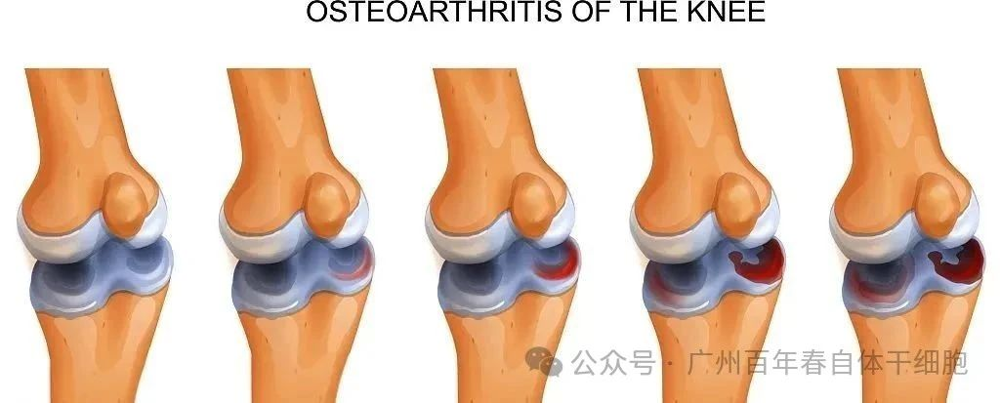
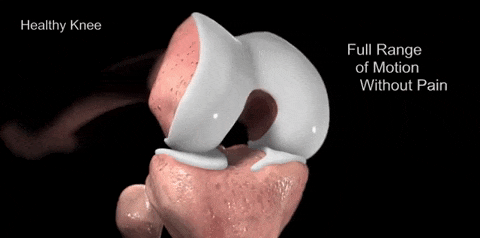
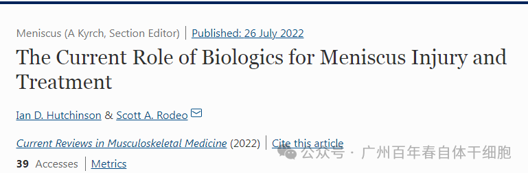
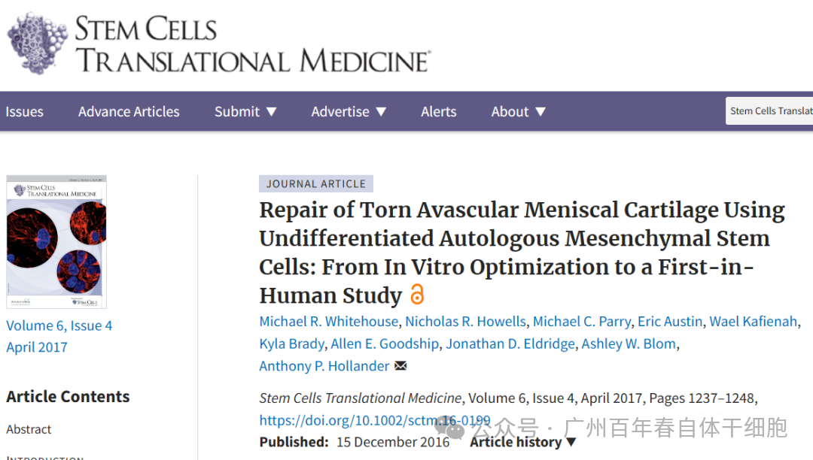
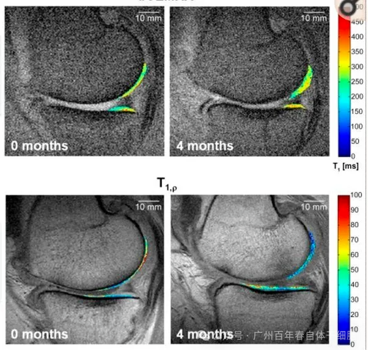
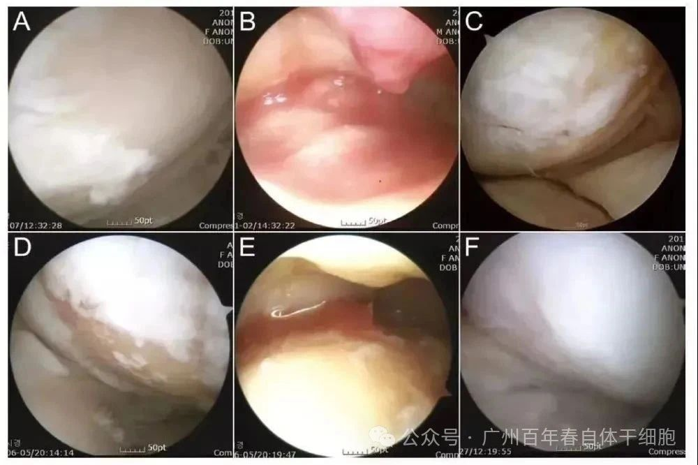
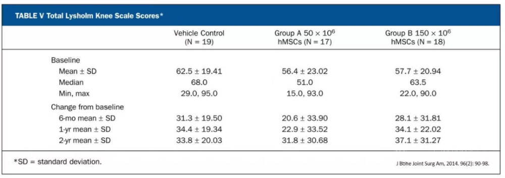

别等身体亮红灯！百年春自体干细胞，为您定制细胞级抗衰防线
2026-03-04

About Us
关于百年春
前言：
我国半月板损伤患者约5000万人，发病率逐年升高，随着运动成为现代人的健康方式之一，半月板损伤不再是老年人的专属，过度运动和不良的运动方式使得年轻人也成为了主要人群。
什么是半月板损伤？

半月板损伤是指半月板受到外力的作用而导致撕裂、破裂，继而出现膝关节周围疼痛、交锁等症状。半月板损伤的主要症状是膝关节疼痛、压痛或肿胀，部分患者可感觉到“撕裂的声音”或“走路时弹响”。
当损伤的半月板发生卡顿时，可能会出现关节交锁症状，这意味着膝关节被突然“锁”在半屈曲的固定状态，无法自行伸直。半月板损伤也可能引起失控感，俗称“打软腿”。这是一种肌肉失控而难以支撑自我的感觉，让人想要“跪倒”。如果半月板损伤后未能接受及时的治疗，患者可能出现膝关节活动障碍、关节积液、骨关节炎等并发症。
半月板损伤发病率提高、不容忽视
半月板是位于组成膝关节的两块主要骨骼之间的纤维软骨。我们可以将半月板比作一个“缓冲器”，在膝关节运动和跳跃落地时，它能发挥弹性减震作用，吸收冲击力量，保护关节面。需要注意的是，它已不再是老年人的专属，过度运动和不良的运动方式使越来越多的年轻人也受到了半月板损伤的困扰。
研究数据显示：我国半月板损伤患者约5000万人，发病率逐年升高，且呈年轻化趋势，21~30岁年龄段患者若有明确外伤史，多由剧烈运动损伤所致；31~40岁年龄段患者若无明确外伤史或有轻微外伤，则多为慢性损伤。
半月板损伤的现状

自体间充质干细胞修复半月板损伤的作用机制
自体间充质干细胞具有长期自我更新和多向分化潜能，可分化各类结缔组织和结缔组织细胞，如：皮肤、脂肪、骨骼、关节、韧带、肌肉、软骨、半月板等等各种支持细胞和连接细胞的潜能；具有免疫调节和抗炎特性，是身体的修复力和自愈力的总代表。

· 定向归巢到损伤部位，分化为软骨细胞；
干细胞治疗半月板损伤临床案例
案例1：
2022年6月，英国科学家在《Current Reviews in Musculoskeletal Medicine》提出，生物制剂有望提升半月板损伤术后的修复和愈合速度，并且在实验室研究阶段已经取得重大突破。

案例2：
在《Stem Cells Translational Medicine》杂志发表的一项研究指出，研究团队对18名患者进行了关节腔内干细胞移植干预，移植细胞剂量分别为低剂量2x10^6个、中剂量10x10^6个、高剂量50x10^6个干细胞，并在移植后6个月内对半月板修复状况进行了跟踪随访。

研究结果显示，接受干细胞疗法的患者疼痛感明显减轻，且半月板软骨质量得到了显著提升，证实了干细胞疗法在半月板修复干预中的积极作用，且临床试验过程中并未发现不良反应。

案例3：
《Am J Sports Med》2014杂志刊登，35人关节腔内移植3.8×10
^6个干细胞，修复后约24-36个月检测结果显示，自体间充质干细胞回输后显著改善膝关节的炎症反应，半月板软骨覆盖量增加。
图中A-C为51岁男性膝关节镜，D-F为54岁女性膝关节镜。A/D为治疗前，白色示意软骨，浅黄色示意裸露的骨。B/E为自体间充质干细胞注射。C/F为治疗后的关节镜检查。
案例4：
在一项RCT研究中， 55名接受半月板部分切除术的患者，被随机分成两组，分别在术后注射透明质酸钠或两种不同剂量的MSC（5×10^7，15×10^7），并对这些患者进行了两年多的随访，MSC治疗组患者的半月板体积显著增加（预先定义为15%的阈值），疼痛显著减轻。

案例5：
2016年，WHITEHOUSE等人针对5名患有无血管半月板损伤的患者实施了一项以干细胞疗法为核心的干预研究。经过为期24个月的随访观察，结果显示所有患者的症状均获得了显著改善。
目前，全球已经有多个国家将干细胞应用到半月板治疗临床探索当中，并取得了惊人成果。
文末总结
干细胞治疗为半月板损伤患者提供了一种创新且充满希望的治疗选择。与传统治疗方法相比，干细胞利用其自我更新和分化为软骨细胞的能力，为受损的半月板组织提供了一种内在的修复机制。随着研究的深入和技术的成熟，干细胞疗法有望为半月板损伤治疗开启新的时代。